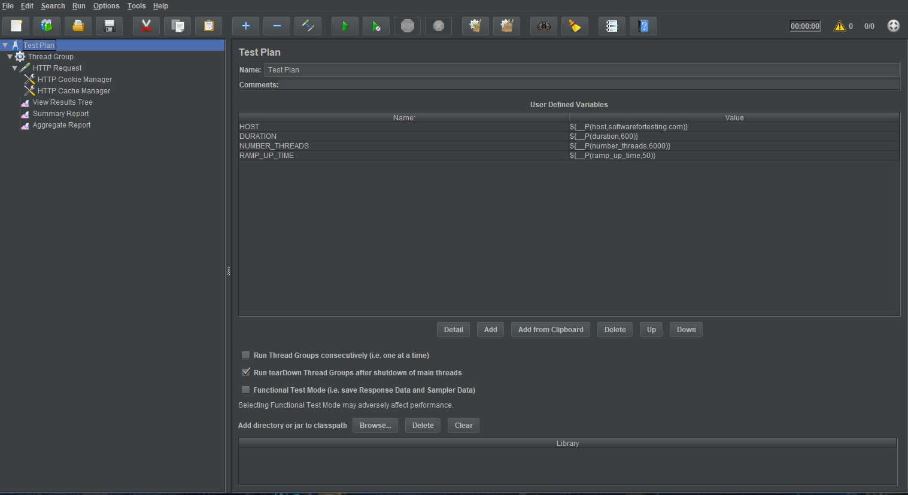
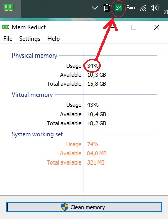
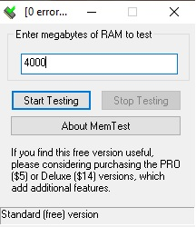
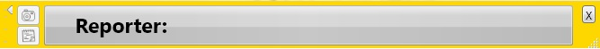
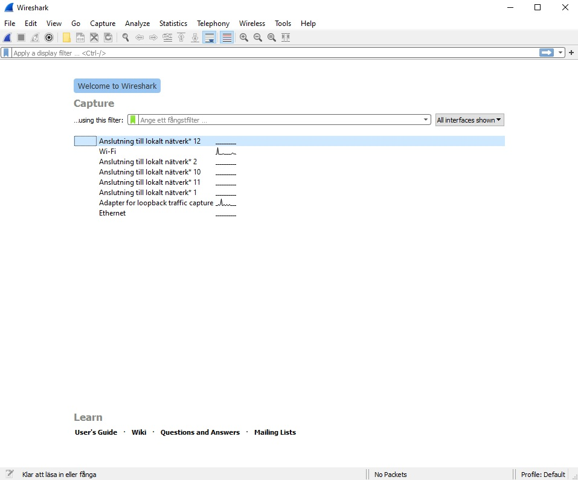
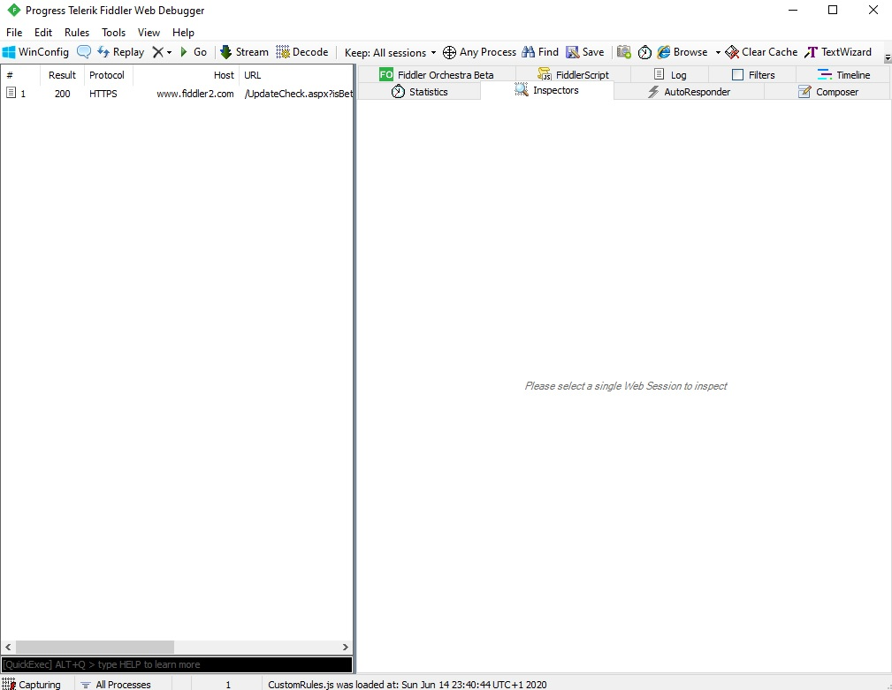
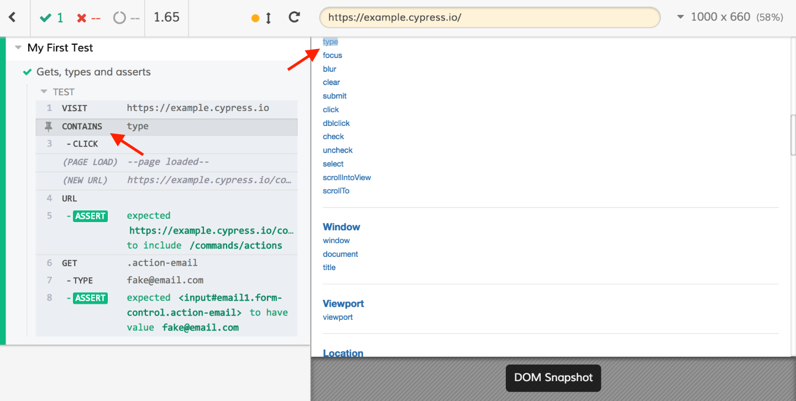
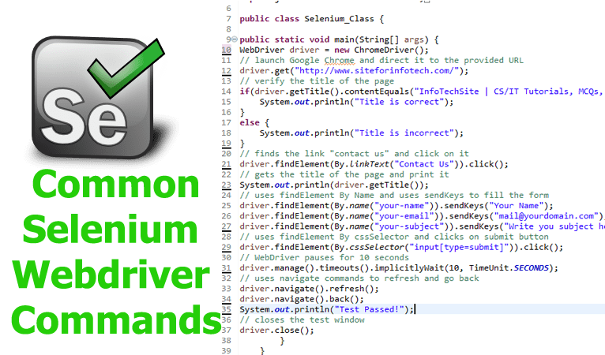
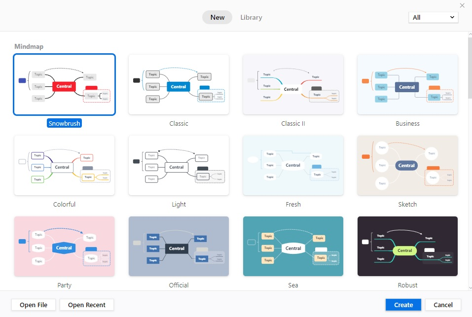

This page contains testing tools that can be useful for all testers in need. The list is based only on
known tools but if there are more useful tools missing from the list which of course does, let me know by sending your feedback! The software descriptions have been
taken from official sites and are not my own thoughts.
Please hover on the left side of the page or tape on the menu on the left side to see available menus.

Apache JMeter may be used to test performance both on static and dynamic resources, Web dynamic applications. It can be used to simulate a heavy load on a server,
group of servers, network or object to test its strength or to analyze overall performance under different load types.
Apache JMeter features include:
Ability to load and performance test many different applications/server/protocol types:
- Web - HTTP, HTTPS (Java, NodeJS, PHP, ASP.NET, …)
- SOAP / REST Webservices
- FTP
- Database via JDBC
- LDAP
- Message-oriented middleware (MOM) via JMS
- Mail - SMTP(S), POP3(S) and IMAP(S)
- Native commands or shell scripts
- TCP
- Java Objects
- More in the official webpage......

Lightweight real-time memory management application to monitor and clean system memory on your computer.
- The program used undocumented internal system features (Native API) to clear system cache (system working set, working set,
standby page lists, modified page lists) with variable result ~10-50%.
- Application it is compatible with Windows XP SP3 and higher operating systems, but some general features available only since Windows Vista.
- You can download either the installer or portable version. For correct working, need administrator rights.
- More in the official webpage......

MemTest is a RAM tester that runs under Windows. It verifies that your computer can reliably store and retrieve data from memory. A correctly functioning
computer should be able to do this with 100% accuracy day in and day out. A computer that fails these tests, perhaps because of old hardware, damaged hardware,
or poorly configured hardware,
will be less stable and crash more often. Even worse, it will become even less stable over time as corrupted data is written to your hard disk.
- By running MemTest you can ensure that your computer's RAM correctly functions. It is wise to test this when you buy a new computer,
install new RAM, or change the configuration of your machine (for instance, to overclock it).
- Are you the sort of user who likes to push the performance of your
machine to the edge? Relying upon whether your machine will boot after your new BIOS tweaks is a poor way to determine the safety of your new settings.
- Use Mem Test as a true test of stability.
- More in the official webpage......

A note taking application that aids in the reporting process of SBTM – Session Based Test Managements.
SBTM is a method for managing exploratory tests, which relies on notes taken during an uninterrupted testing session and a review of these notes afterwards.
The notes being the most important part of the whole method, there are many techniques and suggestions on how to carry them on, and some applications
that help you do and review them.This tool wasn’t born, however, from a study of all the steps in SBTM (although it is based on such).
It was born from careful observation of sessions performed by me and other testers, and observation of session reviews.
During such observations, we noticed a few things on the dynamics of note taking and review.
- Notes should be easy and quick to take, or there will be fewer/poorer notes
- Dealing with the structure of the session report *during* the tests session deviates attention, slows the cognitive process and makes it boring
- If the session reports aren’t computerized, doing a final report is a nightmare (we had tried hand-written notes for a while for their simplicity, bad idea)
- Session reports that are grouped by section lose their chronology (The two SBTM tools linked above sort by section)
- Session reports in binary format are harder to work with as you cannot index, grep or manipulate easily…
The tool iterated during many versions where it was tweaked to fit my friend’s reporting activities.
Any module that wasn’t immediately necessary for reporting a testing step was removed, and the others made more straightforward.
The result has the following benefits:
- A tool that is standalone (no installation required), can be used across different computers from your USB disk-on-key.
- It is yellow and always-on-top, so testers don’t need to look for it on their desktop.
- Notes are taken one by one, in one-liners. Note types (our name for ‘sections’) can be changed while you type by using directional keys.
- To augment the one-liner notes, the application can take screenshots on-demand, and provides an extended rich text format notes area.
- All notes are saved in CSV text files, which combine plain text flexibility with spreadsheet manipulation power.
- More in the official webpage......

Wireshark is the world’s foremost and widely-used network protocol analyzer. It lets you see what’s happening on your network
at a microscopic level and is the de facto (and often de jure) standard across many commercial and non-profit enterprises,
government agencies, and educational institutions. Wireshark development thrives thanks to the volunteer
contributions of networking experts around the globe and is the continuation of a project started by Gerald Combs in 1998.
Wireshark has a rich feature set which includes the following:
- Deep inspection of hundreds of protocols, with more being added all the time
- Live capture and offline analysis
- Captured network data can be browsed via a GUI, or via the TTY-mode TShark utility
- Read/write many different capture file formats: tcpdump (libpcap), Pcap NG, Catapult DCT2000, Cisco Secure IDS iplog, Microsoft Network Monitor,
Network General Sniffer® (compressed and uncompressed), Sniffer® Pro, and NetXray®, Network Instruments Observer, NetScreen snoop, Novell LANalyzer,
RADCOM WAN/LAN Analyzer, Shomiti/Finisar Surveyor,
Tektronix K12xx, Visual Networks Visual UpTime, WildPackets EtherPeek/TokenPeek/AiroPeek, and many others
- Live data can be read from Ethernet, IEEE 802.11, PPP/HDLC, ATM, Bluetooth, USB, Token Ring, Frame Relay, FDDI, and others (depending on your platform)
- More in the official webpage......

Web debugging proxy tool to log all HTTP(S) traffic between your computer and the Internet. Inspect traffic, set breakpoints, and
fiddle with request/response.
Key Features:
- Debug traffic from PC, Mac or Linux systems and iOS and Android mobile devices. Ensure the proper cookies,
headers and cache directives are transferred between the client and server. Supports any framework, including .NET, Java, Ruby, etc.
- Edit web sessions easily: just set a breakpoint to pause the processing of
the session and permit alteration of the request/response. Compose your own HTTP requests and run them through Fiddler.
- Fiddler lets you see the “total page weight,” HTTP caching and compression at a glance.
Isolate performance bottlenecks with rules such as “Flag any uncompressed responses larger than 25kb.”
- Decrypt HTTPS traffic and display and modify web application requests using a
man-in-the-middle decryption technique. Configure Fiddler to decrypt all traffic, or only specific sessions.
- Use Fiddler Composer to quickly test APIs by creating and sending requests. Useful while developing new APIs or when testing existing APIs.
Composer is fully integrated with Sessions list; simply drag any session onto composer and edit and test the request.
- More in the official webpage......

Picture source : https://www.cypress.io/
Fast, easy and reliable testing for anything that runs in a browser.
Cypress is different:
- Most end-to-end testing tools are Selenium-based, which is why they all share the same problems. To make Cypress different, we built a new architecture from the ground up.
Whereas Selenium executes remote commands through the network, Cypress runs in the same run-loop as your application.
- Cypress tests anything that runs in a web browser. All of the architecture surrounding Cypress is built to handle modern JavaScript frameworks especially well.
We have hundreds of projects using the
latest React, Angular, Vue, Elm, etc. frameworks. Cypress also works equally well on older server rendered pages or applications.
- While you can compile down to JavaScript from any other language, ultimately the test code is executed
inside the browser itself. There are no language or driver bindings - there is and will only ever be just JavaScript.
- One of our goals was to make test-driven development a reality for end-to-end testing.
Cypress is at its best when you use it as you build your application. We give you the power to code as fast as possible.
- Writing end-to-end tests takes a lot of different tools to work together. With Cypress you get multiple tools in one.
There is no need to install 10 separate tools and libraries to get your test suite set up. We have taken some
of the best-in-class tools you are likely already familiar with and made them all work together seamlessly.
- More in the official webpage......

Picture source : https://www.siteforinfotech.com/selenium-webdriver-commands-automated-testing/
WebDriver drives a browser natively, as a user would, either locally or on a remote machine using the Selenium server, marks a leap forward in terms of browser automation.
Selenium WebDriver refers to both the language bindings and the implementations of the individual browser controlling code. This is commonly referred to as just WebDriver.
Selenium WebDriver is a W3C Recommendation:
- WebDriver is designed as a simple and more concise programming interface.
- WebDriver is a compact object-oriented API.
- It drives the browser effectively.
- More in the official webpage......

Mind, a full-featured mind mapping and brainstorming tool, designed to generate ideas, inspire creativity, brings productivity in a remote WFH team.
- Many great products start with a small idea. Mind map can really be useful at the beginning of a project.
Use it to record every idea in the meeting, you might be surprised by the difference and achievement it makes in the long run.
- Creativity will make you a more interesting person and let you win more possibilities both
at work and life. Mind maps help you think more, think further and are encouraged to explore different creative pathways.
- All the mind maps are easy to be found both on your laptop and mobile devices, which allows you to access them any time and anywhere.
- More in the official webpage......